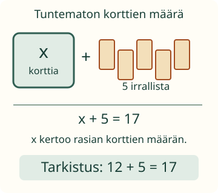

<link rel="stylesheet" href="lesson.css">
<section data-unknown-lesson>

<section data-teaching-step="1" data-lesson-role="teaching-step">
<p> Loikka kokoaa näyttelykortteja. Osa on rasiassa, viisi irrallaan. Yhteensä kortteja on 17. Miten rasian määrä merkitään, kun sitä ei vielä tiedetä?</p>
<h2>Kirjain kertoo tuntemattoman määrän</h2>
<p><strong>Tavoite:</strong> Tulkitsen, mitä lukua kirjain tässä tilanteessa tarkoittaa, ja tarkistan ehdotukseni.</p>
</section>


<section data-teaching-step="2" data-lesson-role="teaching-step">
<h3>1. Esine ja sen lukumäärä ovat eri asioita</h3>
<p>Sovitaan, että <strong>x on rasiassa olevien korttien lukumäärä</strong>. Se ei ole rasian nimi. Tilanteen ehto on x + 5 = 17: rasian kortit ja viisi irrallista ovat yhteensä 17.</p>
<figure data-lesson-role="worked-example"><figcaption>Kirjain korvaa määrän lukuarvon. Yhtäsuuruusmerkki kertoo, että puolilla on sama arvo.</figcaption></figure>
<p>Kokeillaan x = 10. Silloin 10 + 5 = 15, joten ehdotus ei täytä ehtoa. Kun x = 12, saadaan 12 + 5 = 17. Tässä tilanteessa x on siis 12.</p>
<p>Entä x = 17? Silloin 17 + 5 = 22. Luku 17 on <em>koko määrä</em>; x kertoo vain rasian korttien määrän. Ehdotuksia voi vaihtaa, mutta alkuperäisen rasian määrä ei vaihdu kokeilemalla.</p>
</section>


<section data-teaching-step="3" data-lesson-role="teaching-step">
<h3>2. Siirto: kirjain voi kertoa hinnan</h3>
<p>Lippu maksaa a euroa ja esite 4 euroa. Yhteensä maksetaan 11 euroa. Nyt <strong>a on lipun hinnan lukuarvo euroina</strong>, ei itse lippu. Ehto on a + 4 = 11. Ehdotus a = 7 toimii: 7 + 4 = 11.</p>
<p>Kirjainta ei päätellä esineen alkukirjaimesta tai aakkosjärjestyksestä. Sovittu merkitys ja tilanteen ehto ratkaisevat. Toisessa, erikseen määritellyssä tehtävässä sama kirjain voi tarkoittaa muuta lukua.</p>
</section>


<section data-teaching-step="4" data-lesson-role="teaching-step">
<p data-lesson-role="question"><strong>Ennusta:</strong> Jos korttirasiassa olisi 13 korttia, täyttyisikö ehto x + 5 = 17?</p>
</section>


<section data-teaching-step="5" data-lesson-role="teaching-step">
<details data-lesson-role="answer"><summary>Tarkista ennuste</summary><p>13 + 5 = 18. Se on yksi liikaa. Ehdotus 13 ei sovi alkuperäiseen ehtoon.</p></details>
</section>


<section data-teaching-step="6" data-lesson-role="teaching-step">
<div data-practice hidden>
<h3>Kokeile lukua alkuperäiseen ehtoon</h3>
<fieldset><legend>Tuntemattoman ehdotus</legend>
<p data-context></p><p>Kokeiltava ehto:</p><p class="relation" data-relation></p>
<label>Ehdottamasi luku <input data-candidate type="text" inputmode="numeric" autocomplete="off" maxlength="4" aria-label="Ehdotus tuntemattomaksi luvuksi"></label> <span data-unit></span>
<p data-trial></p>
<button type="button" data-action="check">Tarkista ehdotus</button><button type="button" data-action="clear">Poista ehdotus</button>
<button type="button" data-action="reverse">Vaihda yhtälön puolet</button><button type="button" data-action="context">Kokeile hintatilannetta</button>
<p data-feedback role="status" aria-live="polite"></p>
</fieldset></div>
<details data-lesson-role="hint"><summary>Apua</summary><p>Korttitilanteessa piirrä 17 pistettä ja erota viisi irrallista. Loput vastaavat x:ää. Voit myös vähentää: 17 − 5 = 12. Tarkista aina alkuperäisessä ehdossa. Myös 17 = x + 5 kertoo saman ehdon kuin x + 5 = 17.</p></details>
</section>


<section data-teaching-step="7" data-lesson-role="teaching-step">
<details data-lesson-role="teaching-step"><summary>Kokeile lisää: sama kirjain kahdesti</summary><p>Ehdossa n + n = 14 sama n tarkoittaa molemmissa kohdissa samaa lukua. Vaikka 3 + 11 = 14, et voi antaa toiselle n:lle arvoa 3 ja toiselle arvoa 11. Arvo 7 toimii: 7 + 7 = 14. Eri kirjaimilla voi silti joskus olla samat arvot.</p></details>
</section>

<details class="teacher" data-lesson-role="teacher-note"><summary>Aikuiselle ja ilman ruutua</summary><p>Luokat 7–9. M-ALG-04 on kanoninen required-esitieto; M-ALG-05 on vahva tuki. Pääpolku käsittelee annetun tilanteen lukumäärää tai hinnan lukuarvoa. Yhteen- ja vähennyslaskun voi näyttää tukena. Numerokenttä rajaa kokeilut kokonaislukuihin 0–20; tämä on harjoituksen rajaus, ei tuntemattomien yleinen ominaisuus.</p><p>Piilota kortteja rasiaan, jätä osa näkyviin ja kerro kokonaismäärä. Oppija ehdottaa piilotetun määrää ja tarkistaa ehdon. Ruutu ei todenna fyysisen rasian sisältöä, itsenäistä yhtälön muodostamista, yleistä ratkaisumenetelmää tai pysyvää osaamista. Mitään vastausta ei tallenneta. Suullista selitystä ei vahvisteta painikkeella.</p><p>Näissä kahdessa ehdossa on yksi ratkaisu. Kaikki yhtälöt eivät ole tällaisia: x = x toteutuu monella luvulla, mutta x + 1 = x ei tavallisilla luvuilla. Kirjaimen rooli täytyy tulkita tilanteesta; pelkkä =-merkki ei tee siitä yhtä tuntematonta. Tässä numeerisessa algebrassa kirjain viittaa lukuun; älä yleistä tätä kaikkeen matematiikan merkintätapaan.</p></details>

<section data-teaching-step="8" data-lesson-role="teaching-step">
<p data-lesson-role="question"><strong>Lopuksi:</strong> Mitä x kertoo korttitilanteessa? Miten tarkistat ehdottamasi luvun?</p>
<details data-lesson-role="answer"><summary>Lopun ajatus</summary><p>x kertoo rasian korttien lukumäärän. Sijoitan ehdotuksen alkuperäiseen ehtoon ja tarkistan, ovatko puolet yhtä suuret.</p></details>
</section>

</section>
